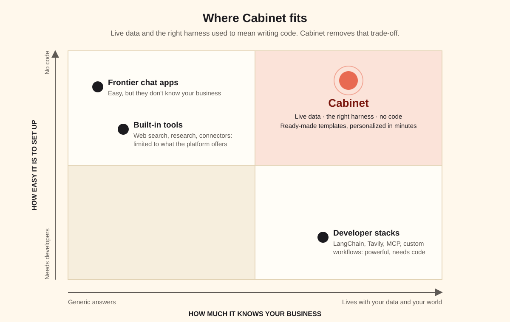

Lives with your world
Your own knowledge plus real-time signals, so the AI answers for your business and your customers, not the average one.
Making frontier AI truly yours: what Cabinet solves, why the bottleneck moved from models to products, and a working cabinet that proves it.
Your own knowledge plus real-time signals, so the AI answers for your business and your customers, not the average one.
Agents, skills, schedules and integrations that do the work on their own, and keep a receipt for every step.
Templates that are ready out of the box. The flexibility of a developer stack, without needing a developer.
Frontier LLMs changed the world, but without real-time data and context, they can still produce generic or irrelevant results. Many tools address this. The leading AI platforms already do so by giving users built-in capabilities such as web search, research and access to external tools, but those capabilities are still limited to what the platform provides. If you want much greater flexibility, through tools like LangChain, Tavily, MCP integrations and custom workflows, you typically need developer expertise.
That gap is where Cabinet comes in: full personalization with minimal friction, through built-in templates that are ready to use out of the box.

By seamlessly combining a business's knowledge base with reusable templates, dedicated agents and external integrations, Cabinet gives the "normies" the best of both worlds. Non-technical users can turn generic frontier models into AI systems that actually understand their business, their customers and their environment.
The bottleneck used to be the models. Then came an explosion of tools built around them, many of which, while "riding" the AI wave, became hugely successful companies themselves. Today the bottleneck is different: how do we make all of this capability accessible to the normies? The question is whether you can turn the vision into a product.
The user interface has always proven to be just as important as the underlying product. Notion didn't invent notes, documents or databases, but its interface made those familiar primitives feel like something entirely new. Now imagine what happens when a legendary UI meets fully personalized AI. That's the direction I see Cabinet moving in.
Putting the thesis to the test
A reusable Cabinet template for local businesses, built with nothing but Cabinet's own building blocks. Its first home is a New York pizza shop two blocks from Madison Square Garden, and it runs on real NHL and NBA results.